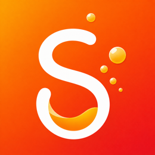
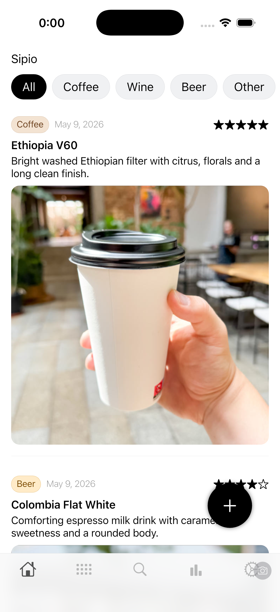
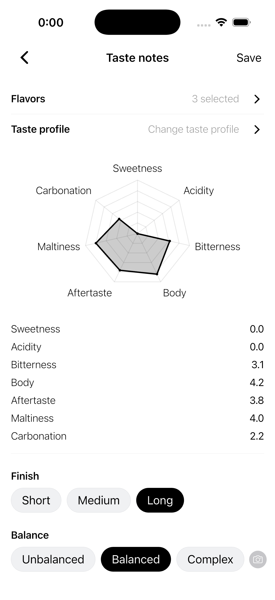
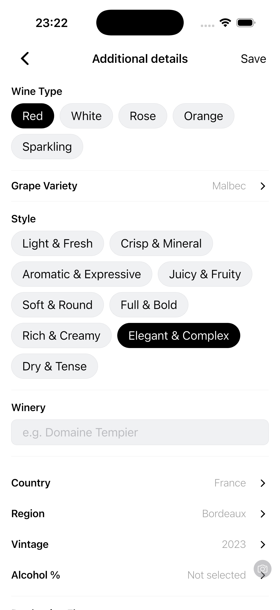
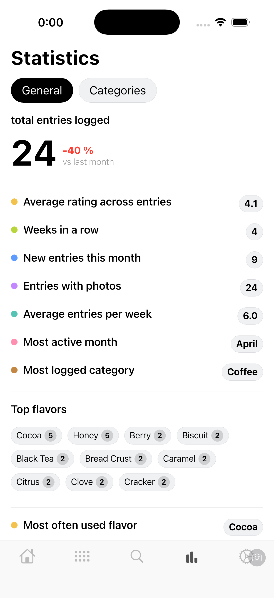

Entries and feed
A quick overview of every drink, with category filters and search by name.

SipioA drink journal for coffee, wine, beer and more
All your flavors, photos and ratings in one place. Log what you drink, what you love and what you want to revisit.



No more scattered notes
Sipio is your personal tasting archive. Add a name, date, rating, photos and notes, then fine-tune the details by category.
A quick overview of every drink, with category filters and search by name.
Save moments from the cafe, cellar or bar and revisit them in a clean gallery.
Flavors, profile, finish and balance help capture more than a star rating.
Open any entry later to add details, make changes or remove it without digging around.
Built around each drink
Track origin, roastery, method and profile for coffee. Capture variety, winery and style for wine. Add brewery, style and ABV for beer.


Insight you can use
Sipio Premium adds iCloud sync and backup, detailed category statistics and unlimited advanced details.